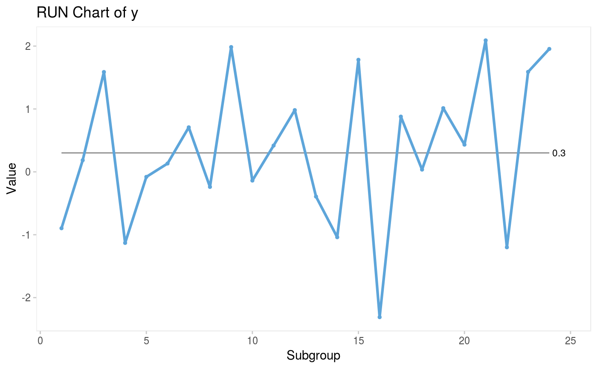
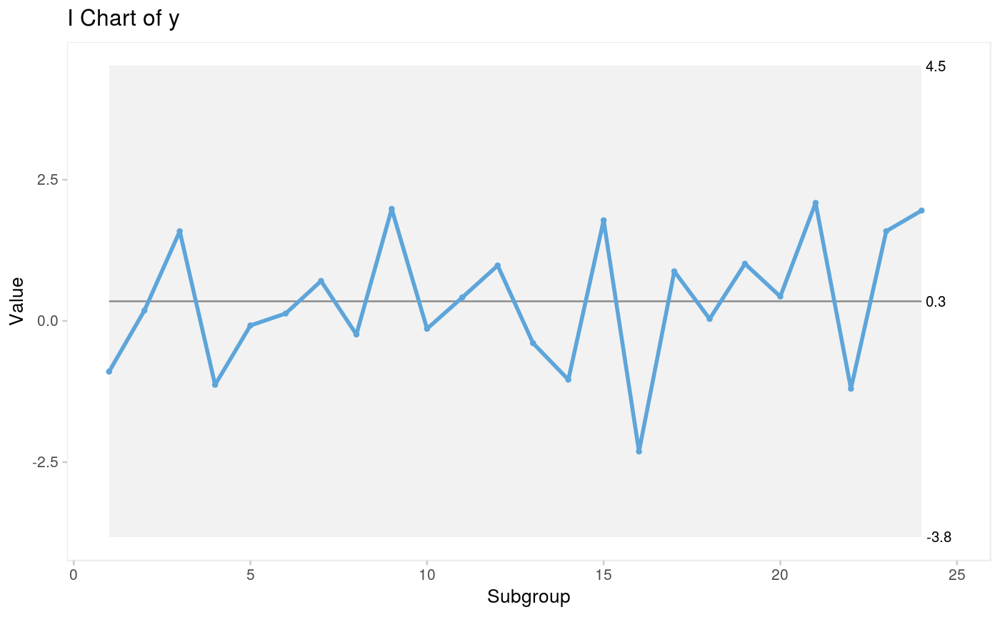
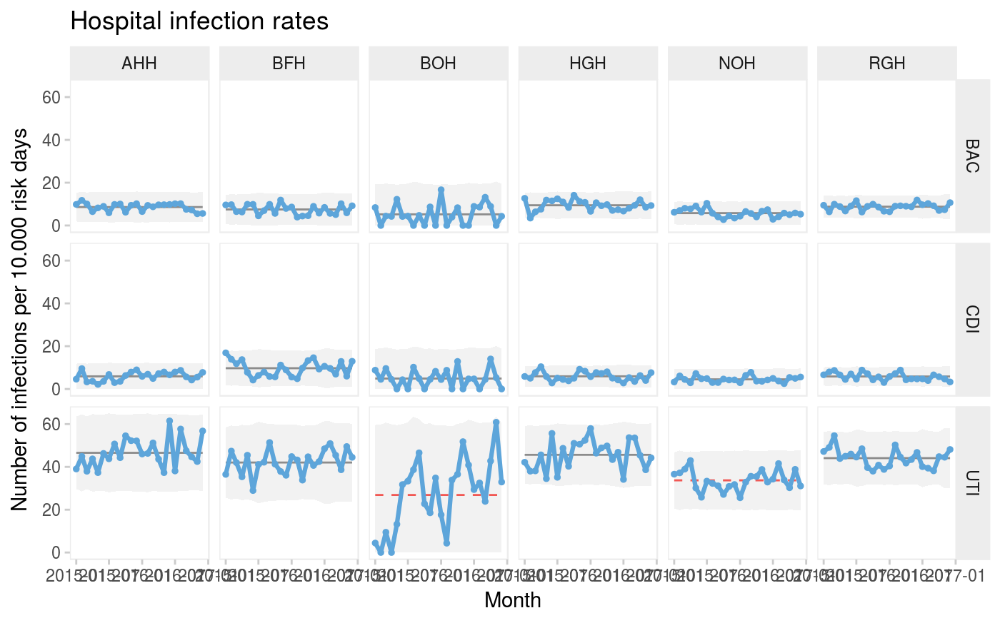

The qic() function creates run charts and Shewhart control charts for
process control and improvement. Included control charts are: I, MR, Xbar, S,
T, C, U, U', P, P', and G charts.
qic(x, y = NULL, n = NULL, data = NULL, facets = NULL, notes = NULL, chart = c("run", "i", "mr", "xbar", "s", "t", "p", "pp", "c", "u", "up", "g"), agg.fun = c("mean", "median", "sum", "sd"), multiply = 1, freeze = NULL, part = NULL, exclude = NULL, target = NA * 1, cl = NA * 1, nrow = NULL, ncol = NULL, scales = "fixed", title = "", ylab = "Value", xlab = "Subgroup", subtitle = NULL, caption = NULL, part.labels = NULL, show.labels = is.null(facets), decimals = 1, point.size = 1, x.period = NULL, x.format = NULL, x.angle = NULL, x.pad = 1, y.expand = NULL, y.neg = TRUE, y.percent = FALSE, show.grid = FALSE, flip = FALSE, strip.horizontal = FALSE, print.summary = FALSE)
| x | Vector of subgroup values to plot along the x axis. |
|---|---|
| y | Vector of measures or counts to plot on the y axis (numerator). |
| n | Vector of subgroup sizes (denominator). |
| data | Data frame containing variables used in the plot. |
| facets | One or two sided formula with factors used for facetting plots. |
| notes | Character vector of notes to be added to individual data points. |
| chart | Character value indicating the chart type. Possible values are: 'run' (default), 'i', 'mr', 'xbar', 't', 's', 'c', 'u', 'up', 'p', 'pp', and 'g'. |
| agg.fun | Aggregate function for summarising the y variable if there are more than one observation per subgroup. Only relevant for run charts and I charts. Possible values are: 'mean' (default), 'median', 'sum', and 'sd'. |
| multiply | Number indicating a number to multiply y axis by, e.g. 100
for percents rather than proportions. See also |
| freeze | Integer indicating the last data point to include in calculation of baseline paramenters for centre and control lines. Ignored if part argument is given. |
| part | Integer vector indicating data points before recalculation of centre and control lines. |
| exclude | Integer vector indicating data points to exclude from calculations of centre and control lines. |
| target | Numeric, either a single value indicating a target value to be plotted as a horizontal line or a vector for variable target line. |
| cl | Numeric, either a single value indicating the centre line if known in advance or a vector for variable centre line. |
| nrow, ncol | Number indicating the preferred number of rows and columns in facets. |
| scales | Character string, one of 'fixed' (default), 'free_y', 'free_x', or 'free' indicating whether y and x axis scales should be the same for all panels or free. |
| title | Character string specifying the title of the plot. |
| ylab | Character string specifying the y axis label. |
| xlab | Character string specifying the x axis label. |
| subtitle | Character string specifying the subtitle. |
| caption | Character string specifying the caption. |
| part.labels | Character vector specifying labels for chart parts created with the freeze or part argument. |
| show.labels | Logical indicating whether to show labels for centre and control lines on chart. Defaults to TRUE when facets argument is NULL. |
| decimals | Integer indicating the preferred number of decimals in centre and control line labels. |
| point.size | Number specifying the size of data points. |
| x.period | Character string specifying the interval cut points of
datetime x values used for aggregating y values by week, month, etc.
See the breaks argument of |
| x.format | Date format of x axis labels. See |
| x.angle | Number indicating the angle of x axis labels. |
| x.pad | Number indicating expansion of x axis to make room for axis labels. |
| y.expand | Numeric value to include in y axis. Useful e.g. for starting the y axis at zero. |
| y.neg | If TRUE (default), the y axis is allowed to be negative (only relevant for I and Xbar charts). |
| y.percent | If TRUE, formats y axis labels as percentages. |
| show.grid | If TRUE, shows grid. |
| flip | If TRUE, rotates the plot 90 degrees. |
| strip.horizontal | If TRUE, makes y strip horizontal. |
| print.summary | If TRUE, prints summary. |
A qic object. Inherits from 'ggplot'.
Non-random variation in the form of minor to moderate persistens shifts in data over time is identified by the Anhoej rules for unusually long runs and unusually few crossing. Special cause variation in the form of larger, possibly transient, shifts in data is identified by Shewhart's 3-sigma rule.
vignette('qic')
# Lock random number generator to make reproducible results. set.seed(2) # Generate vector of 24 random normal numbers y <- rnorm(24) # Run chart qic(y)# I control chart qic(y, chart = 'i')# U control chart from build-in data set of hospital infection rates faceted # by hospital and type of infection. qic(month, n, n = days, data = hospital_infections, facets = infection ~ hospital, chart = 'u', multiply = 10000, title = 'Hospital infection rates', ylab = 'Number of infections per 10.000 risk days', xlab = 'Month')